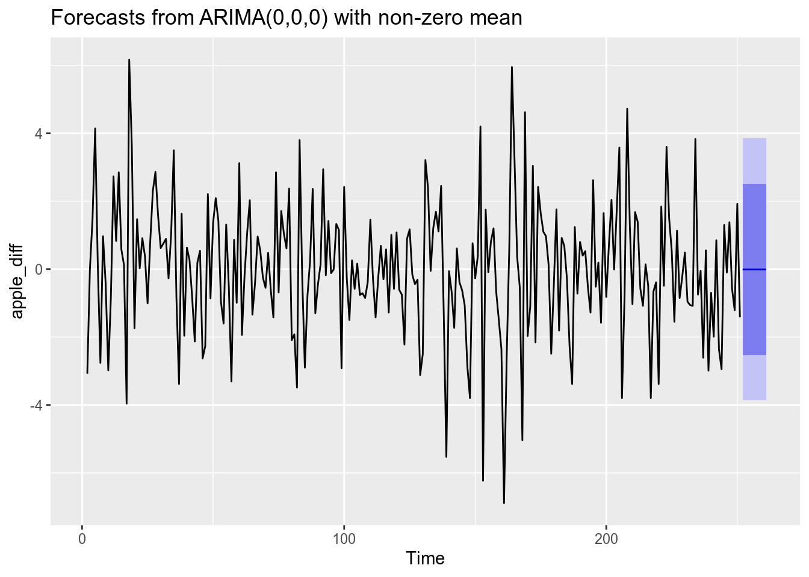

Коан 7 ARMA
Достигнем просветления в анализе временных рядов вместе с нашими друзьями, Stata, R и Python! В качестве анализируемых наблюдений используем данные по стоимости акций коммапнии
Applec 2015-01-01 по 2015-12-31: цена открытия/ закрытия, минимальная/ максимальная цены, объём и скорректиованная цена.
7.1 R
Традиционно начнём в r.
Загрузим необходимые пакеты:
library(xts) # работа с временными рядами
library(dplyr) # манипуляции с данными
library(ggplot2) # построение графиков
library(aTSA) # тест Дики-Фуллера
library(forecast) # прогнозирование ARMA-моделей
library(quantmod) # импортирование набора данных из интернета
library(lmtest) # проверка гипотезИмпортируем dataset AAPL прямо из пакета quantmod. Будем анализировать одномерный временной ряд от переменной AAPL. Close.
getSymbols("AAPL",from = "2015-01-01",to = "2015-12-31")[1] "AAPL"Обозначим исследуемый набор данных как apple_df.
apple_df = AAPL$AAPL.CloseВизуализируем изучаемый временной ряд, его автокорреляционную и частную автокорреляционную функции.
ggtsdisplay(apple_df)
По графику видим, что процесс напоминает случайное блуждание: медленно убывает автокорреляционная функция, первый лаг частной автокорреляционной функции не входит в доверительный интервал, остальные - входят.
Проверим стационарность ряда тестом Дики - Фуллера.
adf.test(apple_df)Augmented Dickey-Fuller Test
alternative: stationary
Type 1: no drift no trend
lag ADF p.value
[1,] 0 0.0708 0.664
[2,] 1 0.1616 0.690
[3,] 2 0.1670 0.692
[4,] 3 0.1321 0.682
[5,] 4 0.0120 0.647
Type 2: with drift no trend
lag ADF p.value
[1,] 0 2.15 0.99
[2,] 1 2.06 0.99
[3,] 2 2.24 0.99
[4,] 3 2.35 0.99
[5,] 4 2.65 0.99
Type 3: with drift and trend
lag ADF p.value
[1,] 0 1.75 0.99
[2,] 1 1.53 0.99
[3,] 2 1.64 0.99
[4,] 3 1.77 0.99
[5,] 4 2.17 0.99
----
Note: in fact, p.value = 0.01 means p.value <= 0.01 Тест выявил нестационарность на 5% уровне значимости (основная гипотеза – о нестационарности ряда).
Возьмём первую разность от ряда, чтобы сделать его стационарным (ведь только стационарные процессы могут быть описаны моделью ARMA (p, q) ) и снова построим автокорреляционную и частную автокорреляционную функции.
apple_diff = diff(apple_df)
ggtsdisplay(apple_diff)
summary(apple_diff) Index AAPL.Close
Min. :2015-01-02 Min. :-6.89000
1st Qu.:2015-04-04 1st Qu.:-1.02500
Median :2015-07-02 Median :-0.07500
Mean :2015-07-02 Mean :-0.00804
3rd Qu.:2015-09-30 3rd Qu.: 1.14499
Max. :2015-12-30 Max. : 6.17000
NA's :1 Ряд похож на стационарный. Теперь построим несколько моделей, которые потенциально могут описать данный ряд, хотя уже заранее ожидается, что ряд в разностях будет описан ARIMA (0, 0, 0), что равносильно ARMA(0, 0), но всё же…
ARIMA (0, 0, 0):
arima_000 = arima(apple_diff, order = c(0, 0, 0))
summary(arima_000)
Call:
arima(x = apple_diff, order = c(0, 0, 0))
Coefficients:
intercept
-0.0080
s.e. 0.1244
sigma^2 estimated as 3.867: log likelihood = -523.79, aic = 1051.58
Training set error measures:
ME RMSE MAE MPE MAPE MASE
Training set 8.078552e-15 1.966425 1.495158 99.55996 99.55996 0.6825331
ACF1
Training set -0.02936922Построим также модель ARIMA (1, 0, 0) , что равносильно ARMA (1, 0), для сравнения.
arima_100 = arima(apple_diff, order = c(1, 0, 0))
summary(arima_100)
Call:
arima(x = apple_diff, order = c(1, 0, 0))
Coefficients:
ar1 intercept
-0.0296 -0.0075
s.e. 0.0635 0.1208
sigma^2 estimated as 3.863: log likelihood = -523.68, aic = 1053.36
Training set error measures:
ME RMSE MAE MPE MAPE MASE
Training set -0.0003728078 1.965566 1.491983 94.09101 105.0814 0.6810838
ACF1
Training set -0.002372191coeftest(arima_100)
z test of coefficients:
Estimate Std. Error z value Pr(>|z|)
ar1 -0.0296313 0.0634712 -0.4668 0.6406
intercept -0.0075101 0.1207545 -0.0622 0.9504По информационному критерию Акаике первая модель лучше (AIC меньше), а также во второй модели коэффициент перед ar(1) незначим.
Получается, что (как и ожидалось) первая модель лучше. Можно схитрить и использовать функцию автоподбора коэффициентов модели ARIMA.
arima_auto_model = auto.arima(apple_diff)
summary(arima_auto_model)Series: apple_diff
ARIMA(0,0,0) with zero mean
sigma^2 estimated as 3.867: log likelihood=-523.79
AIC=1049.58 AICc=1049.6 BIC=1053.1
Training set error measures:
ME RMSE MAE MPE MAPE MASE
Training set -0.008040008 1.966441 1.49548 -37.76185 445.4945 0.6841274
ACF1
Training set -0.02936922Такая функция автоматически минимизирует критерий Акаике. Заметим, что автоподбор выдал модель ARIMA (0, 0, 0) для первой разности.
Теперь проверим остатки модели ARIMA (0, 0, 0) на белошумность. Сохраним остатки и проделаем тест Льюнг - Бокса, в котором основная гипотеза - остатки независимы.
Сохраним остатки модели ARIMA (0, 0, 0) и построим тест Льюнг - Бокса (если наблюдений мало, то используем опцию Box-Pierce).
res_arima_000 = resid(arima_000)
Box.test(res_arima_000, lag = 10, type = "Ljung-Box")
Box-Ljung test
data: res_arima_000
X-squared = 4.2362, df = 10, p-value = 0.9361Основная гипотеза об отсутствии автокорреляции остатков отвергается, следовательно, модель корректно описывает структуру автокорреляции.
Время небольших фактов: Льюнг - это женщина-статистик! Поэтому правильно склонять “Льюнг - Бокса”, а не “Льюнга - Бокса”!
Можно ещё также научиться оценивать визуально, где лежат корни AR и MA (unit root test). Так как для построенной модели нет AR и MA частей (ARIMA (0, 0, 0)), то можно применить команду к, например, ARIMA (1, 0, 0):
autoplot(arima_100)
Построим прогноз на 3 периода вперёд для модели arima_000. Визуализируем прогноз, границы 80% и 95% доверительного интервалов.
forecast(arima_000, h = 10) %>%
autoplot()
7.2 Python
Настало время python!
Импортируем необходимые пакеты.
import numpy as np
import pandas as pd
import quandl # импортирование данных из Сети
import datetime # работа с форматами даты и времени
import matplotlib.pyplot as plt # построение графиков
from pandas import Series # работа с временными рядами
import statsmodels
from statsmodels.tsa.arima_model import ARMA # ARMA-модели
from statsmodels.graphics.tsaplots import plot_acf # построение графика acf
from statsmodels.graphics.tsaplots import plot_pacf # построение графика pacf
import statsmodels.api as sm
from statsmodels.stats import diagnostic as diag # тесты
import pmdarima as pm
from pmdarima.arima import auto_arima # автоподбор коэффициентов модели ARIMA
from statsmodels.tsa.stattools import adfuller # тест Дики-ФуллераЗагрузим набор данных:
start = datetime.datetime(2015, 1, 1)
end = datetime.datetime(2015, 12, 31)
apple = quandl.get("WIKI/" + "AAPL", start_date=start, end_date=end)Проверим загрузку данных. Будем анализировать цену закрытия.
apple.head() Open High Low ... Adj. Low Adj. Close Adj. Volume
Date ...
2015-01-02 111.39 111.44 107.350 ... 101.982949 103.863957 53204626.0
2015-01-05 108.29 108.65 105.410 ... 100.139941 100.937944 64285491.0
2015-01-06 106.54 107.43 104.630 ... 99.398938 100.947444 65797116.0
2015-01-07 107.20 108.20 106.695 ... 101.360696 102.362951 40105934.0
2015-01-08 109.23 112.15 108.700 ... 103.265455 106.295968 59364547.0
[5 rows x 12 columns]apple_df = apple["Close"]Посмотрим на структуру временного ряда, автокорреляционную и частную автокорреляционную функции.
apple_df.plot(grid=True)
plt.title("Структурa временного ряда")
plt.show()
plot_acf(apple_df, lags=20)
plt.show()
plot_pacf(apple_df, lags=20)
plt.show()
Появились очень знакомые (и красивые) графики. Важно отметить, что на графиках есть 0 - лаг, он равен единице, в предыдущих графиках его не было.
Проверим стационарность ряда тестом Дики-Фуллера.
res = sm.tsa.adfuller(apple_df, regression="ct")
"p-value:{}".format(res[1])'p-value:0.23195078841554445'Возьмём первую разность и уберём пропущенные наблюдения.
apple_diff = apple_df.diff(periods=1).dropna()И визуализируем структуру нового ряда.
apple_diff.plot(grid=True)
plt.title("Структурa временного ряда")
plt.show()
plot_acf(apple_diff, lags=50)
plt.show()
plot_pacf(apple_diff, lags=50)
plt.show()
Аналогично операциям в r, смоделируем данный ряд как ARMA (0, 0).
arma_00 = ARMA(apple_diff, order=(0, 0))C:\Users\Yuliya\AppData\Local\Programs\Python\Python37\lib\site-packages\statsmodels\tsa\base\tsa_model.py:225: ValueWarning: A date index has been provided, but it has no associated frequency information and so will be ignored when e.g. forecasting.
' ignored when e.g. forecasting.', ValueWarning)arma_00_fit = arma_00.fit(disp=False)
arma_00_fit.summary()<class 'statsmodels.iolib.summary.Summary'>
"""
ARMA Model Results
==============================================================================
Dep. Variable: Close No. Observations: 251
Model: ARMA(0, 0) Log Likelihood -525.777
Method: css S.D. of innovations 1.966
Date: Sat, 18 Jan 2020 AIC 1055.555
Time: 00:45:59 BIC 1062.606
Sample: 0 HQIC 1058.392
==============================================================================
coef std err z P>|z| [0.025 0.975]
------------------------------------------------------------------------------
const -0.0162 0.124 -0.131 0.896 -0.259 0.227
==============================================================================
"""Смоделируем ряд как ARMA (1, 0):
arma_10 = ARMA(apple_diff, order=(1, 0))C:\Users\Yuliya\AppData\Local\Programs\Python\Python37\lib\site-packages\statsmodels\tsa\base\tsa_model.py:225: ValueWarning: A date index has been provided, but it has no associated frequency information and so will be ignored when e.g. forecasting.
' ignored when e.g. forecasting.', ValueWarning)arma_10_fit = arma_10.fit(disp=False)
arma_10_fit.summary()<class 'statsmodels.iolib.summary.Summary'>
"""
ARMA Model Results
==============================================================================
Dep. Variable: Close No. Observations: 251
Model: ARMA(1, 0) Log Likelihood -525.704
Method: css-mle S.D. of innovations 1.965
Date: Sat, 18 Jan 2020 AIC 1057.408
Time: 00:45:59 BIC 1067.984
Sample: 0 HQIC 1061.664
===============================================================================
coef std err z P>|z| [0.025 0.975]
-------------------------------------------------------------------------------
const -0.0157 0.121 -0.130 0.897 -0.253 0.222
ar.L1.Close -0.0243 0.063 -0.383 0.702 -0.149 0.100
Roots
=============================================================================
Real Imaginary Modulus Frequency
-----------------------------------------------------------------------------
AR.1 -41.1210 +0.0000j 41.1210 0.5000
-----------------------------------------------------------------------------
"""Вторая модель имеет более высокое значение критерия Акаике и незначимый коэффициент перед ar(1).
Отдельно можно выделить значения AIC и BIC для построенных моделей.
np.round(arma_00_fit.aic, 2)1055.55np.round(arma_10_fit.aic, 2)1057.41np.round(arma_00_fit.bic, 2)1062.61np.round(arma_10_fit.bic, 2)1067.98Как и в r, python имеет опцию автоподбора коэффициентов модели ARIMA.
auto_arima_python = pm.auto_arima(apple_diff)C:\Users\Yuliya\AppData\Local\Programs\Python\Python37\lib\site-packages\statsmodels\tsa\statespace\representation.py:375: FutureWarning: Using a non-tuple sequence for multidimensional indexing is deprecated; use `arr[tuple(seq)]` instead of `arr[seq]`. In the future this will be interpreted as an array index, `arr[np.array(seq)]`, which will result either in an error or a different result.
return matrix[[slice(None)]*(matrix.ndim-1) + [0]]
C:\Users\Yuliya\AppData\Local\Programs\Python\Python37\lib\site-packages\statsmodels\tsa\statespace\representation.py:375: FutureWarning: Using a non-tuple sequence for multidimensional indexing is deprecated; use `arr[tuple(seq)]` instead of `arr[seq]`. In the future this will be interpreted as an array index, `arr[np.array(seq)]`, which will result either in an error or a different result.
return matrix[[slice(None)]*(matrix.ndim-1) + [0]]auto_arima_python.summary()<class 'statsmodels.iolib.summary.Summary'>
"""
Statespace Model Results
==============================================================================
Dep. Variable: y No. Observations: 251
Model: SARIMAX Log Likelihood -525.777
Date: Sat, 18 Jan 2020 AIC 1055.555
Time: 00:46:00 BIC 1062.606
Sample: 0 HQIC 1058.392
- 251
Covariance Type: opg
==============================================================================
coef std err z P>|z| [0.025 0.975]
------------------------------------------------------------------------------
intercept -0.0162 0.124 -0.131 0.896 -0.260 0.227
sigma2 3.8635 0.285 13.563 0.000 3.305 4.422
===================================================================================
Ljung-Box (Q): 29.94 Jarque-Bera (JB): 9.55
Prob(Q): 0.88 Prob(JB): 0.01
Heteroskedasticity (H): 0.88 Skew: -0.09
Prob(H) (two-sided): 0.55 Kurtosis: 3.94
===================================================================================
Warnings:
[1] Covariance matrix calculated using the outer product of gradients (complex-step).
"""В строчке SARIMAX нет рядом коэффициентов. Это означает, что они нулевые, как и предполагалось, то есть модель описывается ARMA (0, 0). Эта функция также удобна тем, что выводит статистики.
Проверим белошумность остатков тестом Льюнг - Бокса.
Сохраним остатки как residuals. Построим тест Льюнг-Бокса (опция boxpierce=False) (если наблюдений мало, то используем опцию Box-Pierce).
residuals = pd.DataFrame(arma_00_fit.resid)
diag.acorr_ljungbox(residuals, lags=10, boxpierce=False)(array([0.14719804, 2.2301318 , 2.23871226, 3.09884873, 3.18193505,
3.24119693, 3.68529998, 3.69140909, 4.34844736, 4.35831357]), array([0.70122752, 0.32789367, 0.52436357, 0.54142173, 0.67196005,
0.77802184, 0.81522682, 0.8838376 , 0.88701969, 0.92973867]))Посмотрим на прогноз на 10 дней вперёд.
forecast = arma_00_fit.forecast(steps=10)[0]
forecastarray([-0.01621514, -0.01621514, -0.01621514, -0.01621514, -0.01621514,
-0.01621514, -0.01621514, -0.01621514, -0.01621514, -0.01621514])И визуализируем прогнозные значения на исходном графике.
arma_00_fit.plot_predict(len(apple_diff)-250, len(apple_diff)+10)
plt.xlabel("Лаги")
plt.ylabel("Изменение цены")
plt.title("Изменение цены закрытия AAPL")
plt.show()
7.3 Stata
Теперь научимся анализировать временные ряды в stata.
Импортируем данные командой use apple_08.dta.
Установим временной формат переменной Date и визуализируем исследуемый временной ряд, его автокорреляционную и частную автокорреляционную функции.
tsset Dateno variables defined
r(111);
end of do-file
r(111);tsline Close
ac Close
pac Close
На графиках видим отличные от предыдущих 2-х сетов графиков. Почему так происходит – хороший исследовательский вопрос!
Stackexchange рекомендует приписать “, yw” после “ac/pac”, но это не работает на моём примере.
Несмотря на выявленное различие, всё равно посмотрим процедуру анализа временного ряда в stata.
Проверим стационарность ряда тестом Дики-Фуллера.
dfuller Close, trend lags(0)no variables defined
r(111);
end of do-file
r(111);Тест выявил нестационарность на 5% уровне значимости (основная гипотеза - о нестационарности).
Возьмём первую разность от ряда, чтобы сделать его стационарным и снова построим графики ACF и PACF.
gen Close_1 = Close[_n]-Close[_n-1]И визуализируем его, вместе с автокорреляционной и частной автокорреляционной функциями.
tsline Close_1
ac Close_1
pac Close_1
Теперь построим несколько моделей, которые потенциально могут описать данный ряд, хотя уже заранее ожидается, что ряд в разностях будет описан ARIMA (0, 0, 0), что равносильно ARMA (0, 0), но всё же…
ARIMA (0, 0, 0). Можно также отдельно вывести AIC и BIC для построенной модели. Построим также модель ARIMA (1, 0, 0) для сравнения.
arima Close_1, arima(0, 0, 0)
estat ic
arima Close_1, arima(1, 0, 0)
estat icno variables defined
r(111);
end of do-file
r(111);По информационному критерию Акаике первая модель лучше (AIC меньше), а также во второй модели коэффициент перед ar(1) незначим.
Проверим остатки модели ARIMA (0, 0, 0) на белошумность. Сохраним остатки модели и проверим тестом Льюнг-Бокса. Основная гипотеза - остатки независимы.
arima Close_1, arima(0, 0, 0)
predict res, resid
wntestq resno variables defined
r(111);
end of do-file
r(111);Теперь попробуем построить прогноз по модели ARIMA (0, 0, 0):
arima Close_1, arima(0, 0, 0)
predict prognoz
display prognozno variables defined
r(111);
end of do-file
r(111);Прогноз аналогичен полученным раньше.